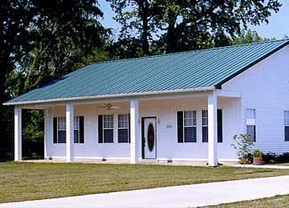
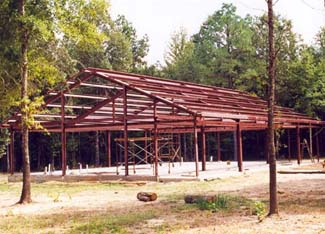

There’s one sector of the homebuilding market that seems to be weathering the recent economic storm better than the rest of its industry - kit homes. Kit homes are houses built from packages of building materials, sometimes pre-cut to fit together without waste. Various styles of homes can be built from house kits.
Many kit homes can actually be built by the homeowner, or at least with substantial homeowner participation, resulting in significant cost savings. The extent of that participation depends on a wide range of variables, including the time and energy the homeowner may have available, knowledge of the various skills and materials required, and willingness and ability to learn.
Dave Kimball, owner of Shelter-Kit in Tilton, N.H., says, “There are a lot of stories in the news about declines in the homebuilding sector, but we’re doing fine. I think people who might have hired a contractor are now looking to us to save some money. It’s an interesting market right now.”
While not all of the hundreds of kit home manufacturers around the country are experiencing strong demand, many have managed to maintain steady business even in the current economic downturn.
Despite the vast array of different packages offered by kit house manufacturers, most kits fall into one of four main categories: domes, timber-frame homes, log homes and panelized houses (plus some hybrid combinations). Steel-frame kit homes are a more recent entrant to the market in a class of their own. But within these broad categories, there is an extremely wide range of products offered, from packages that can be easily assembled without cutting much of anything (a “precut” subcategory), to those that require substantial cutting and trimming on site.
Although there has been a trend in recent years towards larger, customized kit home designs, many in the industry see that trend slowing or even reversing due to the effects of the recession. Kimball says there has been a recent shift toward new “green home” kits.
“A lot of people wanted to know what ‘green’ was, and we realized we needed to formalize the process so they could really understand what was involved,” he says.
Shelter-Kit turned to Rob Pickett of Pickett & Associates of Hartland, Vt., for assistance with that process. Pickett says, “Many kit homes have the potential to provide points towards green building certification as they leave the factory.” According to Pickett, this is because the resource management and efficiency of factory production wastes fewer materials than traditional homes constructed onsite. But in order to receive certification, the home must be assembled and then verified by a third party. Pickett helps companies with that certification process.
Another trend in some kit home packages, especially in panelized homes, is the increasing use of structural insulated panels (SIP) for walls, floors and roofs. The recent inclusion of SIPs in national and international residential building codes has helped to formalize - and encourage - their use. Log homes now have their own standard in those codes as well.
Regardless of the type or style of home, or its main components, it’s important to understand the kit price normally only includes the exterior shell of the house. This is one reason why many kit homes appear to be so much less expensive than a conventional home. Consequently, don’t forget to factor in the cost of finishing the home’s interior (wiring, plumbing, insulation, drywall, trim and fixtures), as well as the cost of land, foundation, utilities, water supply and sewage, which can quickly add a lot to the total project cost.
There are so many choices in the kit home sector that making a decision on which one to buy can be a challenge. In the end, it generally comes down to your personal preference for one style of home. It’s important to evaluate the entire package, the company, the instructions and other documentation as well as the professionalism of the people involved. And don’t forget to ask for references so you can speak with people who have actually lived in a home manufactured by the company you are considering doing business with.
Kit homes offer the opportunity for homeowners to participate in the construction of their own home - and to save money at the same time. If you are handy with tools, self-motivated and well-organized, doing all (or most) of the project yourself might make sense. However, Rob Pickett suggests that in most cases, making use of a trained building professional to ensure the work is done properly will be worth it. “Teaming up with a good builder who is trained in the many different aspects of home construction will ensure more satisfaction in the long run,” he says.
For more information, read Kit Homes.
Have you built a home from a kit or house package? Share your experience in the comments section below.|
 JOHN HOUSE/KODIAK STEEL HOMES Many styles of homes can be built from kits: domes, timber-frame homes, log homes and panelized houses. This house was made from a steel frame kit. |
 JOHN HOUSE/KODIAK STEEL HOMES The steel frame of this kit home is fireproof. |
|